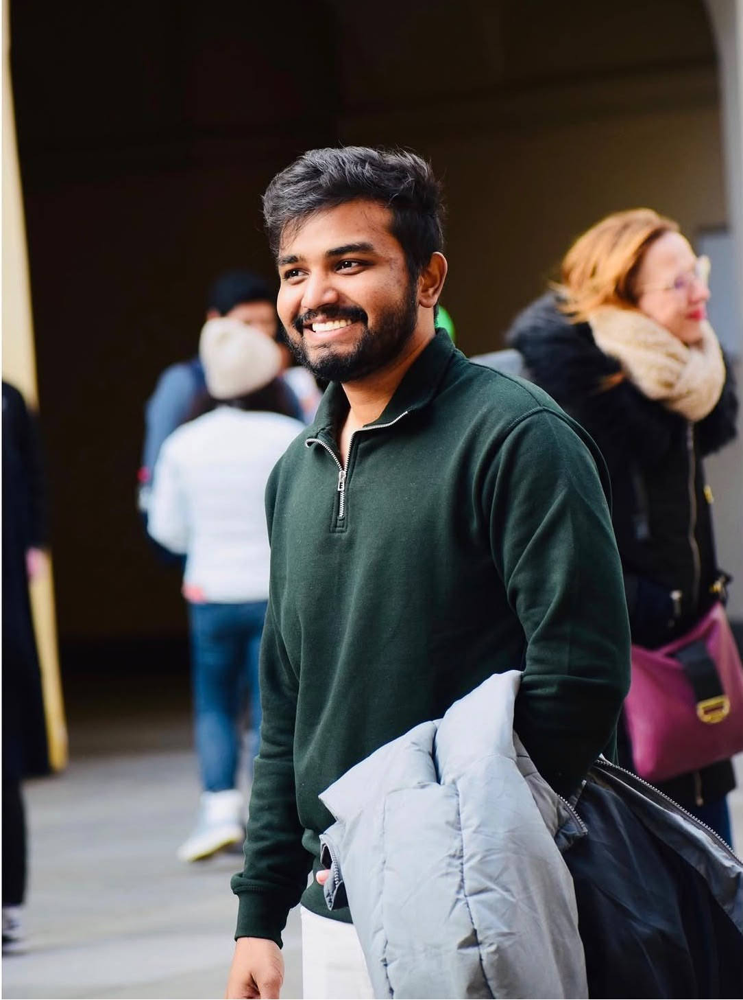
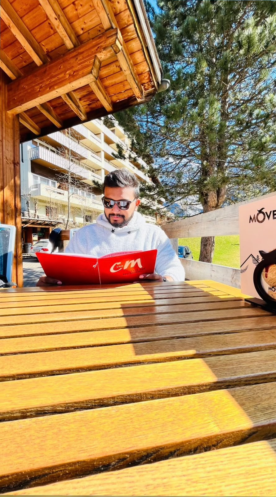
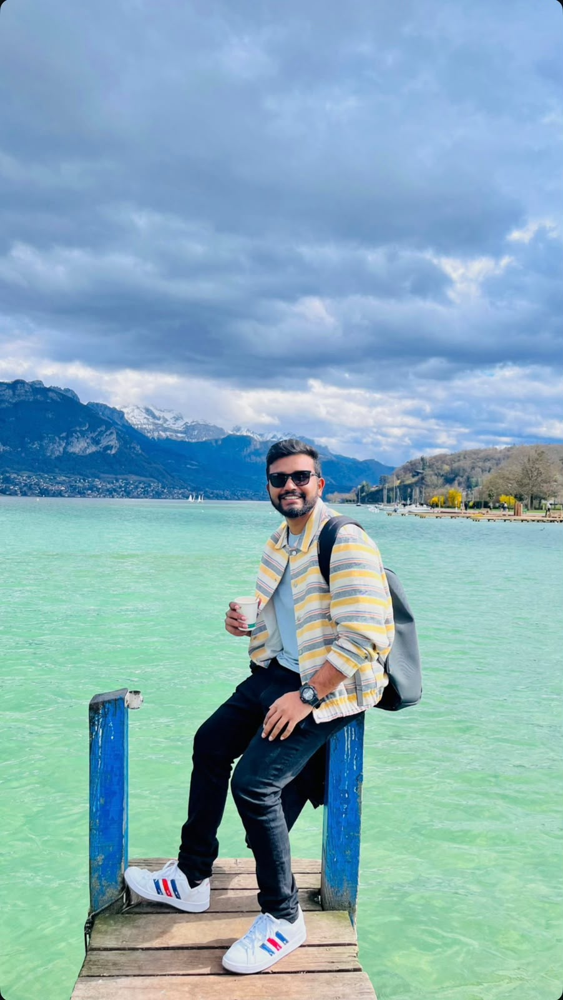

Three places shaped me.
Oman · India · Germany


Country visuals: Pexels · used as place references, not personal photographs.
I grew up in Oman, lived and worked in India, and moved to Germany for university and my professional life. This is my corner of the internet — part work, part curiosity, and part life outside the job title.

Three places, three chapters.
Anything worth understanding.
And, yes, Formula 1.

